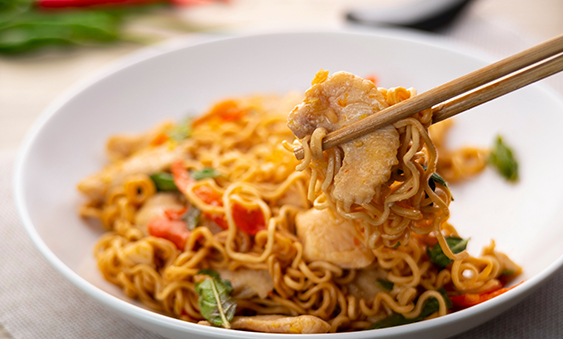

Mie Goreng Jawa
Resep Mie Goreng Sederhana untuk Disantap Ramai-Ramai
Bahan Masakan
- 1 bungkus mie telur (mie kuning), rebus hingga setengah matang lalu tiriskan dan beri sedikit minyak agar tidak menggumpal.
- 75 gram daging ayam, potong dadu.
- 10 ekor udang, kupas dan bersihkan.
- 1 butir telur ayam, kocok lepas.
- 3 sendok makan minyak goreng untuk menumis.
- 1 batang daun bawang, iris serong.
- 1 buah wortel, iris serong tipis
- 2 lembar daun kol, iris kasar
Bumbu halus
- 4 siung bawang merah
- 2 siung bawang putih.
- 2 butir kemiri.
- ½ sendok teh merica butir.
- 2 sendok makan kecap manis.
- Garam secukupnya.
- 1 sendok teh kecap asin.
- 1 bungkus Masako® Rasa Ayam 8.5 gram.
Cara membuat mie goreng
- Haluskan bawang merah, bawang putih, kemiri, dan merica. Lalu tumis hingga harum dan matang menggunakan minyak yang sudah dipanaskan.
- Masukkan potongan daging ayam dan udang, tumis sampai berubah warna.
- Tambahkan telur kocok, lalu aduk sampai matang.
- Masukkan wortel, daun bawang, dan irisan daun kol. Aduk hingga rata.
- Masukkan mie yang sudah direbus setengah matang, tambahkan kecap manis, kecap asin, sedikit garam, dan Masako Rasa Ayam secukupnya. Aduk rata lalu koreksi rasa.
- Jika rasanya sudah sesuai, angkat mie gorengnya lalu sajikan hangat dengan taburan bawang goreng.
- Mie goreng Jawa siap disantap ramai-ramai dengan keluarga!